전체/확대 전장 비율을 조정하고, 머지된 PR #96 피격을 실제 크기·여러 각도에서 검토합니다.
DIRECTION REVIEW · ART COLLECTION 02
작은 전장에서
분명하게 보이는 모험.
최신 캠페인 실행 화면과 새 캐릭터·포탑·유물 시안.
다음 목표는 한 영웅의 모델과 타격감을 실제 전투까지 연결하는 것입니다.
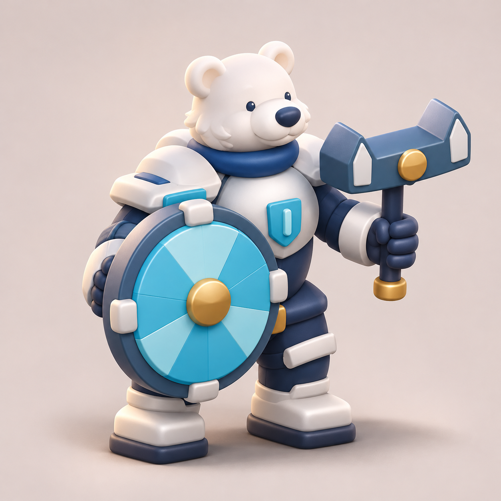
기존 카르를 우선 후보로 모델→동작 이미지→공격·피격의 연결을 완성합니다.
영웅 1·포탑 1 중심의 원정과 보상 흐름을 묶어 Android 기기에서 검증합니다.
BROWSE THE COLLECTION
시안과 실제 화면을 함께 살펴보세요.
이미지를 누르면 원본을 엽니다. 포탑·유물은 신규 미술 후보이며 전투 효과는 아직 구현하지 않았습니다.
12개 이미지
생성 컨셉 · 구현 전 시안
북극곰 수호자
1254 × 1254남색 윤곽·청록 방패·닻 망치. 방패 뒤 결합부 도면 필요.
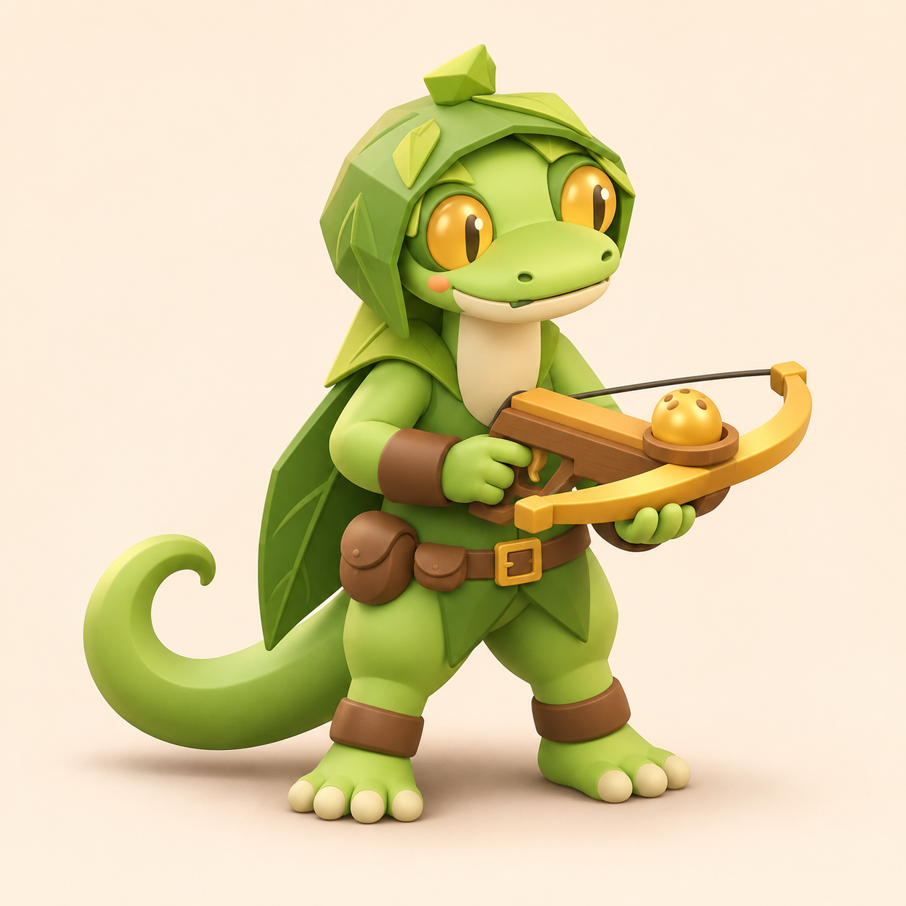
생성 컨셉 · 구현 전 시안
도마뱀 씨앗 궁수
1254 × 1254큰 꼬리·황금 눈·씨앗 쇠뇌. 시위와 씨앗컵 발사 구조 설계 필요.
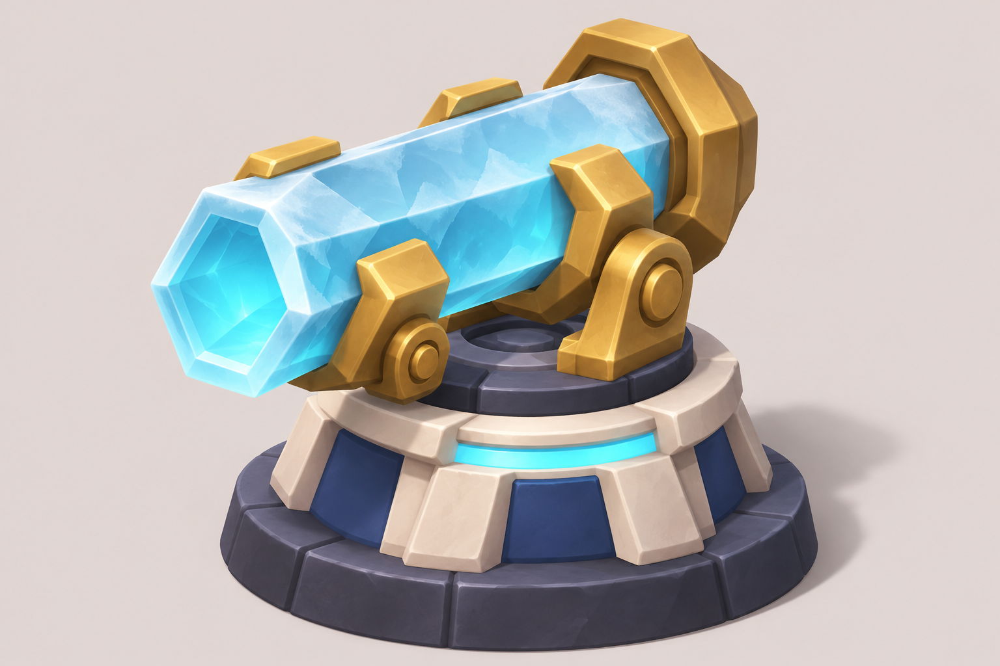
생성 컨셉 · 구현 전 시안
극지 프리즘포
1536 × 1024얼음 포신·황동 지지대. 전후 클램프를 단일 회전축/슬라이더로 정리.
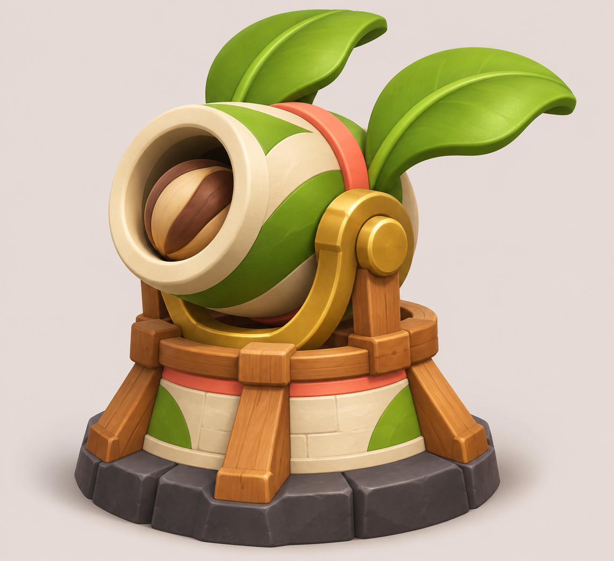
생성 컨셉 · 구현 전 시안
열대 씨앗박격포
1312 × 1199씨앗 포탄·넓은 잎·목재 받침. 뒤쪽 포가 접합을 후면 도면에서 보강.
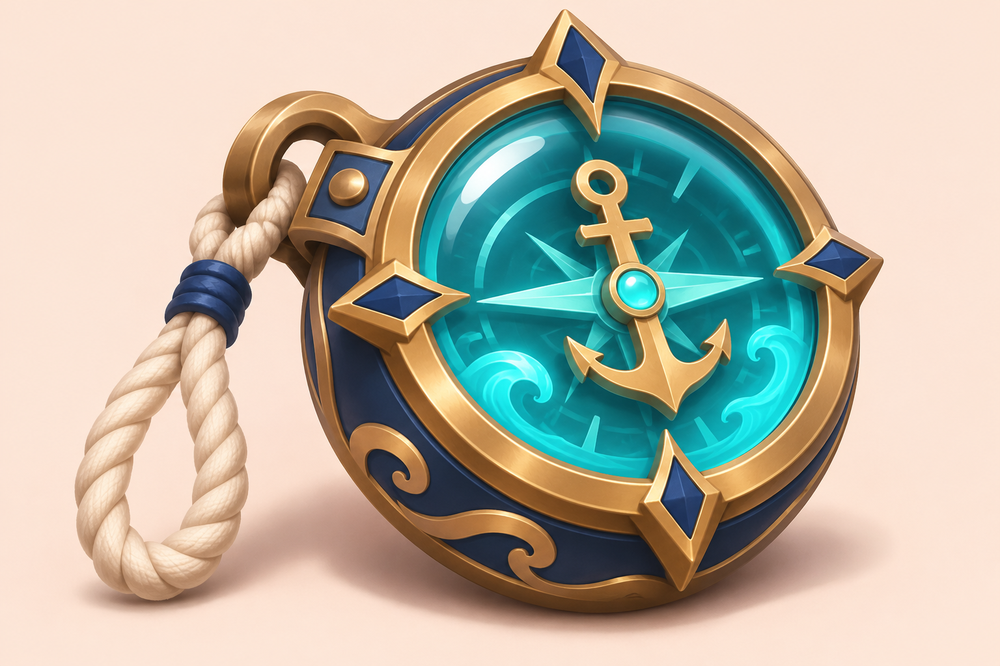
생성 컨셉 · 구현 전 시안
조류 나침반
1536 × 1024청록 유리·황동 닻 바늘. 구조 원정 보상 유물 후보; 효과 미정.
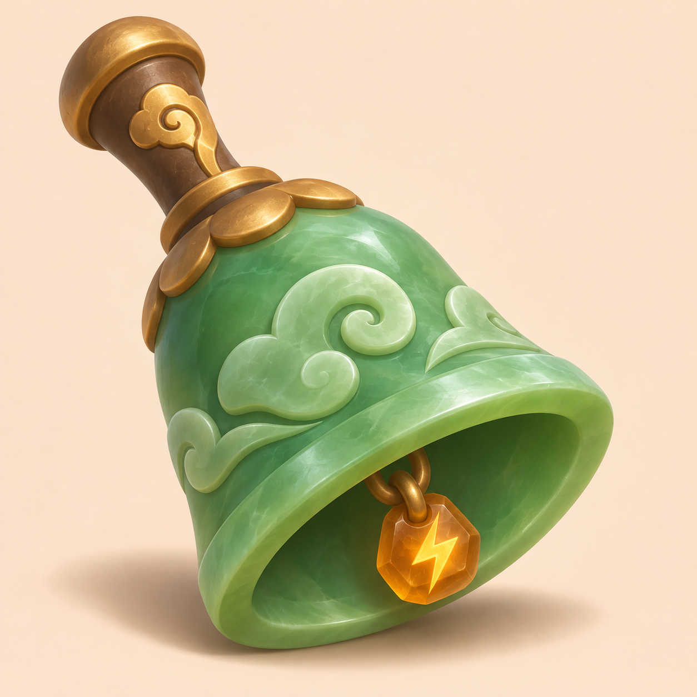
생성 컨셉 · 구현 전 시안
폭풍 옥종
1254 × 1254옥 종몸체·청동 손잡이·호박색 추. 동방 지역 유물 후보; 효과 미정.
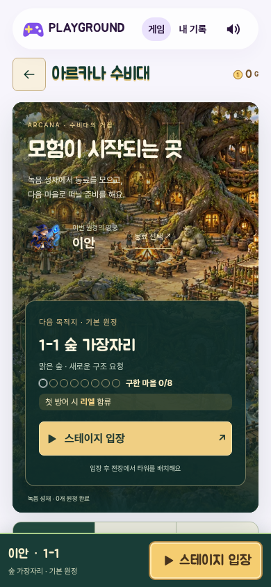
실제 브라우저 캡처
모바일 거점
390 × 844현재 게임 · 390×844
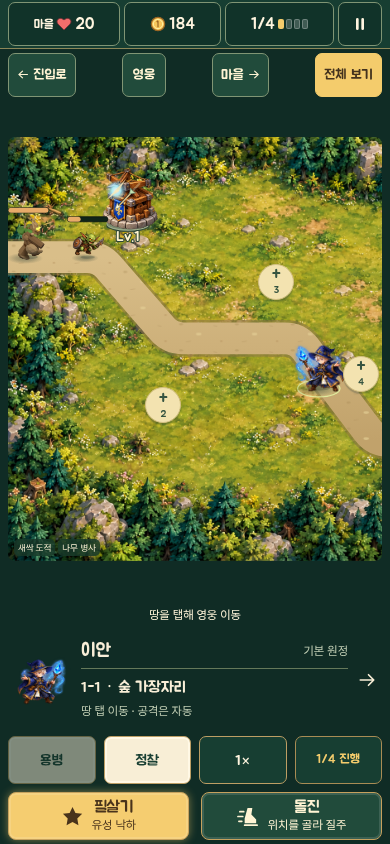
실제 브라우저 캡처
모바일 전투 · 확대
390 × 844현재 게임 · 실제 건설·웨이브
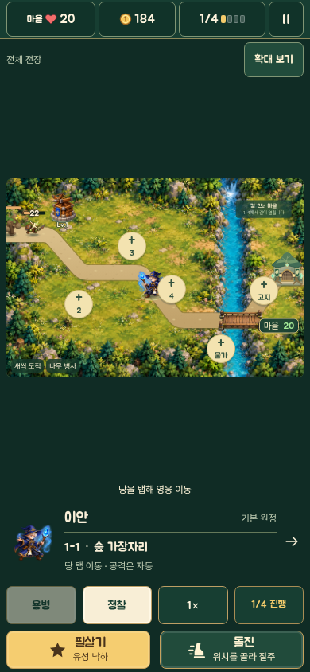
실제 브라우저 캡처
모바일 전투 · 전체
390 × 844현재 게임 · 빈 공간과 크기 개선 기준
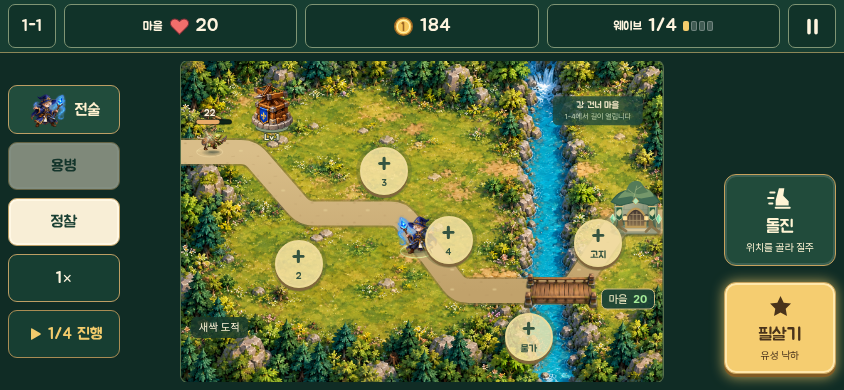
실제 브라우저 캡처
가로 전투
844 × 390현재 게임 · 844×390
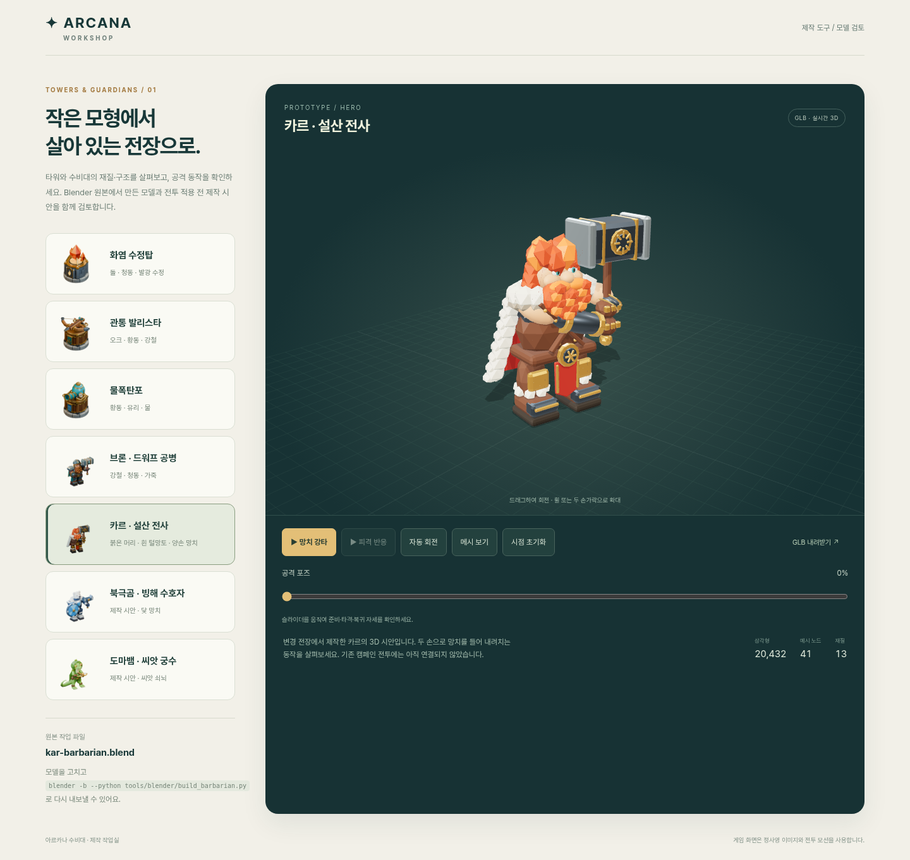
실제 브라우저 캡처
카르 작업실
1440 × 1361실제 GLB 미리보기 · 캠페인 교체 아님
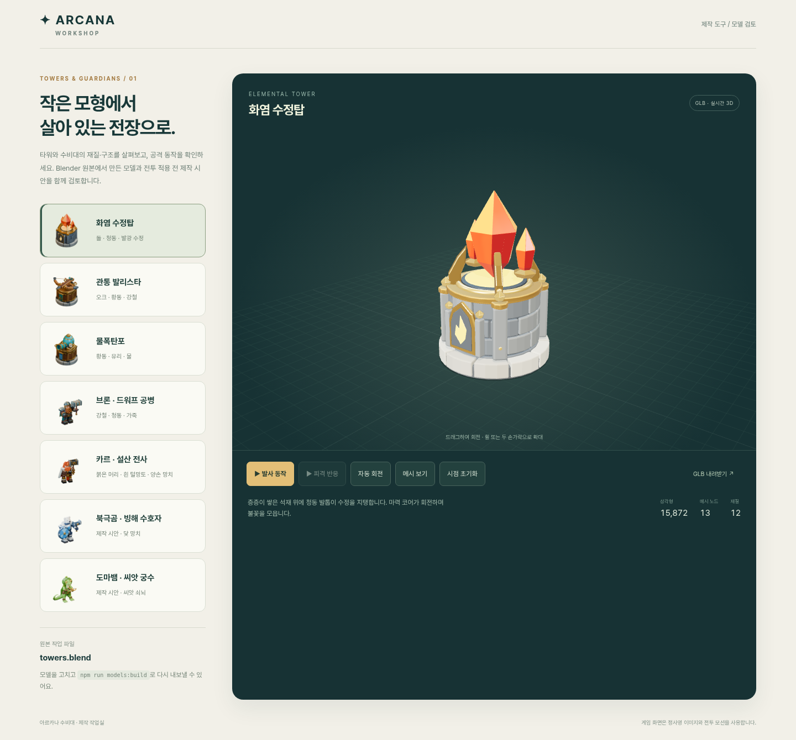
실제 브라우저 캡처
화염 수정탑 작업실
1440 × 1340실제 GLB 미리보기